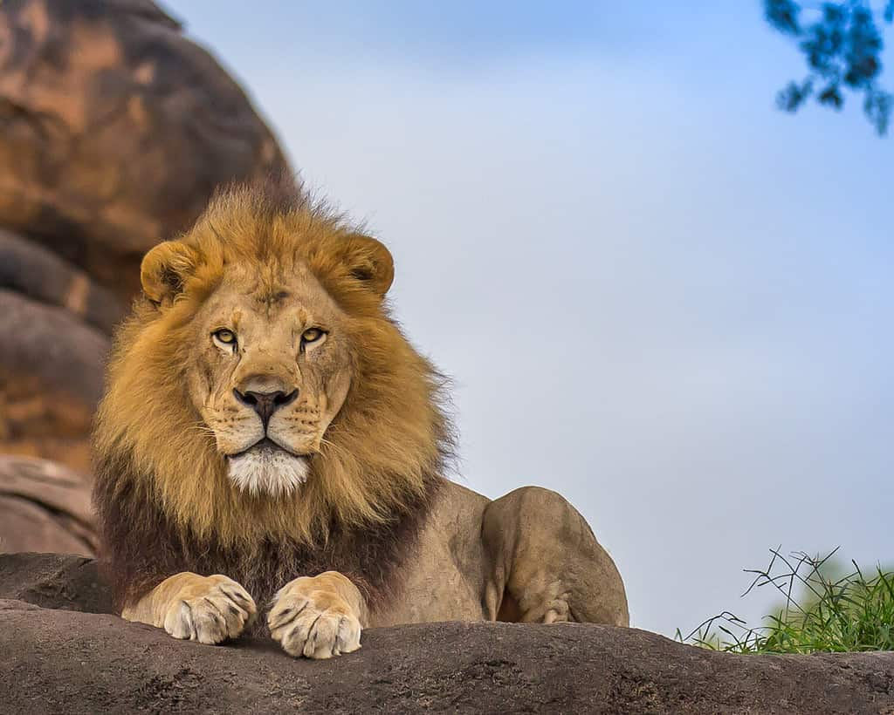

The cat (Felis catus), commonly referred to as the domestic cat or house cat, is the only domesticated species in the family Felidae.
Recent advances in archaeology and genetics have shown that the domestication of the cat occurred in the Near East around 7500 BC.
It is commonly kept as a house pet and farm cat, but also ranges freely as a feral cat avoiding human contact.
It is valued by humans for companionship and its ability to kill vermin. Because of its retractable claws it is
adapted to killing small prey like mice and rats. It has a strong flexible body, quick reflexes, sharp teeth,
and its night vision and sense of smell are well developed.It is a social species, but a solitary hunter and a
crepuscular predator. Cat communication includes vocalizations like meowing, purring, trilling, hissing, growling,
and grunting as well as cat body language. It can hear sounds too faint or too high in frequency for human ears,
such as those made by small mammals. It also secretes and perceives pheromones.
2-DOGS
the sound of th dog:
The dog (Canis familiaris or Canis lupus familiaris) is a domesticated descendant of the wolf.
Also called the domestic dog, it is derived from extinct gray wolves, and the gray wolf is the dog's
closest living relative. The dog was the first species to be domesticated by humans. Hunter-gatherers
did this over 15,000 years ago in Oberkassel, Bonn, which was before the development of agriculture. Due to their
long association with humans, dogs have expanded to a large number of domestic individuals[10] and gained the ability to
thrive on a starch-rich diet that would be inadequate for other canids.
3-LIONS

the sound of th dog:
The lion (Panthera leo) is a large cat of the genus Panthera, native to Africa and India.
It has a muscular, broad-chested body; a short, rounded head; round ears; and a hairy tuft
at the end of its tail. It is sexually dimorphic; adult male lions are larger than females
and have a prominent mane. It is a social species, forming groups called prides. A lion's
pride consists of a few adult males, related females, and cubs. Groups of female lions usually
hunt together, preying mostly on large ungulates. The lion is an apex and keystone predator;
although some lions scavenge when opportunities occur and have been known to hunt humans, lions
typically do not actively seek out and prey on humans.